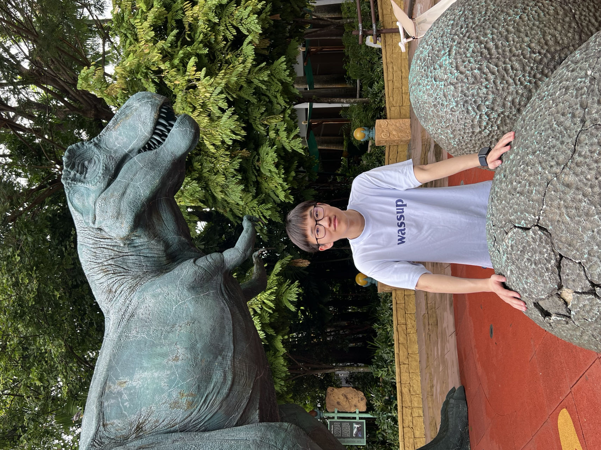

|
Yanjiang Guo I am a third year PhD student of computer science at Institute for Interdisciplinary Information Sciences, Tsinghua University, advised by Jianyu Chen. Previously, I obtained my bachelor's degree from Department of Electronic Engineering, Tsighua University. My research concentrates on Embodied AI, utilizing a range of advanced pre-trained generative models, including large language models and visual diffusion models, to equip agents with physical prior knowledge, thereby enhancing their decision-making and control in open environments. |
 |
ResearchI'm interested in computer vision, deep learning, generative AI, and image processing. Most of my research is about inferring the physical world (shape, motion, color, light, etc) from images, usually with radiance fields. Some papers are highlighted. |

|
Prediction with action: Viisual Policy Learning via Joint Denoising Process
Yanjiang Guo*, Yucheng Hu, Jianke Zhang, Yen-Jen Wang, Xiaoyu Chen, Chaochao Lu#, Jianyu Chen# arXiv, 2024 arXiv Joint Prediction and Action. |
|
|
CAT3D: Create Anything in 3D with Multi-View Diffusion Models
Ruiqi Gao*, Aleksander Holynski*, Philipp Henzler, Arthur Brussee, Ricardo Martin Brualla, Pratul P. Srinivasan, Jonathan T. Barron, Ben Poole* arXiv, 2024 project page / arXiv A single model built around diffusion and NeRF that does text-to-3D, image-to-3D, and few-view reconstruction, trains in 1 minute, and renders at 60FPS in a browser. |

|
Binary Opacity Grids: Capturing Fine Geometric Detail for Mesh-Based View Synthesis
Christian Reiser, Stephan J. Garbin, Pratul Srinivasan, Dor Verbin, Richard Szeliski, Ben Mildenhall, Jonathan T. Barron, Peter Hedman*, Andreas Geiger* SIGGRAPH, 2024 project page / video / arXiv Applying anti-aliasing to a discrete opacity grid lets you render a hard representation into a soft image, and this enables highly-detailed mesh recovery. |

|
SMERF: Streamable Memory Efficient Radiance Fields for Real-Time Large-Scene Exploration
Daniel Duckworth*, Peter Hedman*, Christian Reiser, Peter Zhizhin, Jean-François Thibert, Mario Lučić, Richard Szeliski, Jonathan T. Barron SIGGRAPH, 2024 (Honorable Mention) project page / video / arXiv Distilling a Zip-NeRF into a tiled set of MERFs lets you fly through radiance fields on laptops and smartphones at 60 FPS. |


|
InterNeRF: Scaling Radiance Fields via Parameter Interpolation
Clinton Wang, Peter Hedman, Polina Golland, Jonathan T. Barron, Daniel Duckworth CVPR Neural Rendering Intelligence, 2024 arXiv Parameter interpolation enables high-quality large-scale scene reconstruction and out-of-core training and rendering. |
 
|
Learning to Synthesize Motion Blur
Tim Brooks, Jonathan T. Barron CVPR, 2019 (Oral Presentation) arxiv / supplement / project page / video / code / bibtex Frame interpolation techniques can be used to train a network that directly synthesizes linear blur kernels. |
Miscellanea |


{kind=link}
|
Feel free to steal this website's source code. Do not scrape the HTML from this page itself, as it includes analytics tags that you do not want on your own website — use the github code instead. Also, consider using Leonid Keselman's Jekyll fork of this page. |